건설재료시험기사 (2007-09-02 기출문제)
1과목: 콘크리트공학
1. 습윤상태인 모래시료 500g을 건조기에서 완전 건조한 상태의 질량이 470g이었다. 이 모래의 표면수율이 표면건조 포화상태 기준으로 3%이라면 흡수율은 얼마인가?
- 1.5%
- 3.3%
- 4.5%
- 5.7%
(정답률: 알수없음)

2. 다음의 비파괴검사 방법 중 다른 방법과 복합적으로 강도를 추정하는데 사용될 뿐만 아니라 단독으로 콘크리트의 공극유무, 균열깊이 등을 판정하는 데 사용되는 것은?
- 인발법
- 초음파법
- 관입저항법
- 자연전위법
(정답률: 알수없음)
3. 구조체 콘크리트 압축강도 비파괴 시험에 사용되는 슈이트 해머로써 구조체가 경량 콘크리트인 경우 사용하는 슈미트 해머는?
- N형 슈미트 해머
- L형 슈미트 해머
- P형 슈미트 해머
- M형 슈미트 해머
(정답률: 알수없음)
4. 콘크리트의 강도는 재령과 온도와의 함수인 적산온도로 표시될 수 있는데, 적산온도의 식으로 올바른 것은? (단, M : 적산온도(DㆍD(일), 또는 ℃ㆍD), θ : △t시간 중의 콘크리트의 일평균 양생온도(℃), △t : 시간(일))
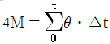
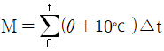
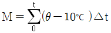
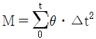
(정답률: 알수없음)
5. 숏크리트에 대한 설명으로 틀린 것은?
- 숏크리트 장기강도의 설계기준강도는 재령 28일에서의 압축강도로 설정한다.
- 배합은 노즐에서 토출되는 토출배합으로 표시한다.
- 숏크리트의 초기강도는 재령 3시간에서 1.5~2.0MPa을 표준으로 한다.
- 굵은골재의 최대치수는 25mm의 것이 널리 쓰인다.
(정답률: 알수없음)
6. 콘크리트 치기에 대한 내용 중 옳지 않은 것은?
- 한 구획내의 콘크리트는 치기가 완료될 때까지 연속해서 쳐야 한다.
- 친 콘크리트는 거푸집 안에서 횡방향으로 이동시켜서는 안된다.
- 콘크리트 치기 중 블리딩수가 발생하면 이 물을 제거하고 콘크리트를 쳐야한다.
- 콘크리트를 2층 이상 나누어 칠 경우 하층의 콘크리트가 완전히 경화한 후에 시공한다.
(정답률: 알수없음)
7. 콘크리트 다지기에 대한 설명 중 옳지 않은 것은?
- 콘크리트 다지기에는 내부진동기 사용을 원칙으로 한다.
- 진동기는 콘크리트로부터 천천히 빼내어 구멍이 남지 않도록 해야 한다.
- 내부진동기는 될 수 있는 대로 연직으로 일정한 간격으로 찔러 넣는다.
- 콘크리트가 한 쪽에 치우쳐 있을 때는 내부진동기로 평평하게 이동시켜야 한다.
(정답률: 알수없음)
8. 크리프(Creep)의 양을 좌우하는 요소로서 맞지 않는 것은?
- 재하되는 콘크리트의 AE제 첨가 여부
- 재하되는 기간
- 재하가 시작하는 시점의 의 재령과 강도
- 재하되는 응력의 크기
(정답률: 알수없음)
9. 슬럼프 시험에 대한 내용 중에서 옳지 않은 것은?
- 콘크리트 시료를 큰 용적의 약 1/3씩 되도록 3층으로 나누어 각 층을 다짐대로 25회씩 골고루 다진다.
- 슬럼프 콘은 밑면의 안지름이 20cm, 윗면의 안지름이 10cm, 높이가 30cm인 원추형을 사용한다.
- 다짐봉은 지름이 16mm이고 길이 500~600mm의 강 또는 금속제 원형봉으로 그 앞 끝을 반구 모양으로 한다.
- 슬럼프는 콘크리트를 다진 후 콘을 윗방향으로 들어 올렸을 때 무너지고 난 후 남은 시료의 높이를 말한다.
(정답률: 알수없음)
10. 현행 시방서에 의거 프리스트레스트 콘크리트의 그라우트에 대한 내용 중에서 옳지 않은 것은?
- 팽창률은 10% 이하로 한다.
- 블리딩률은 0%를 표준으로 한다.
- 팽창성타입의 재령 28일의 압축강도는 20MPa이상 이어야 한다.
- W/C비는 50%이하로 한다.
(정답률: 알수없음)
11. 일반콘크리트의 비비기에서 강제식 믹서일 경우 믹서 안에 재료를 투입한 후 비비는 시간의 표준은?
- 30초 이상
- 1분 이상
- 1분 30초 이상
- 2분 이상
(정답률: 알수없음)
12. 현행 콘크리트 표준시방서에서 염해를 방지하기 위해서 제시된 콘크리트 전체 염화물 이온량은 원칙적으로 얼마 이하로 규정하고 있는가?
- 0.1kg/m3
- 0.2kg/m3
- 0.3kg/m3
- 0.4kg/m3
(정답률: 알수없음)
13. 단위 골재량 절대부피가 0.8m3인 콘크리트에서 잔골재율(S/a)이 40%이고, 굵은골재의 비중이 2.65이면, 단위 굵은 골재량은 얼마인가?
- 84kg/m3
- 1044kg/m3
- 1272kg/m3
- 2120kg/m3
(정답률: 알수없음)
14. 공장제품 콘크리트의 제조 및 시공에 관한 설명 중 틀린 것은?
- 일반적인 공장제품 콘크리트는 재령 14일에서의 압축강도 시험값을 기준으로 한다.
- 공장제품 콘크리트는 기계적 다짐으로 성형하므로 단위수량은 크고, 슬럼프가 큰 묽은반죽 콘크리트가 사용된다.
- 즉시 탈형을 하더라도 해로운 영향을 받지 않는 공장제품에 대해서는 콘크리트가 경화되기 전에 거푸집의 일부 또는 전부를 해체해도 좋다.
- 굵은골재 최대치수는 40mm이하이고 공장제품 최소두께의 2/5 이하이며, 또한 강재의 최소간격의 4/5를 넣어서는 안된다.
(정답률: 알수없음)
15. 매스콘크리트의 균열 방지 또는 대책에 관한 설명 중 틀린 것은?
- 시멘트는 수화열이 적을 것을 사용한다.
- 소요의 품질을 만족시키는 범위내에서 단위시멘트량이 적어지도록 배합을 선정한다.
- 굵은골재 최대치수는 작은 것을 사용한다.
- 콘크리트의 내부온도 상승이 완만하게 되고, 또 최고온도에 도달한 후에는 매스콘크리트 부재를 보온하여 되도록 장시간에 걸쳐 서서히 냉각시키는 것이 좋다.
(정답률: 알수없음)
16. 시멘트 원료의 조합비를 정하는 데 일반적으로 사용되는 수경률의 계산식은?
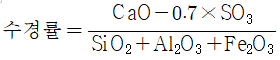
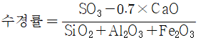
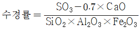
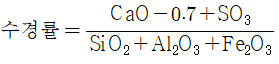
(정답률: 알수없음)
17. AE제(air entraining admixture)가 콘크리트의 성질에 미치는 영향 중 틀린 것은?
- 동일한 워커빌리티를 얻기 위한 단위수량이 감소되어 일반적으로 블리딩도 감소된다.
- 염화칼슘 등이 주로 사용되며, 황산염에 대한 화학저항성이 크다.
- AE제에 의한 연행공기는 볼베어링과 같은 역할을 하여 워커빌리티를 개선한다.
- 물의 동결에 의한 팽창응력을 기초가 흡수함으로써 동결융해에 대한 저항성이 커진다.
(정답률: 알수없음)
18. 콘크리트 현장배합의 경우 골재의 계량오차는 최대 얼마이하이어야 하는가?
- 1%
- 2%
- 3%
- 4%
(정답률: 알수없음)
19. 다음 중 한중 콘크리트에 적절하지 않은 양생 방법은?
- 증기양생
- 전열양생
- 기건양생
- 막양생
(정답률: 알수없음)
20. 프리스트레스트 콘크리트에 관한 설명으로 옳은 것은?
- PS강재의 릴랙세이션은 큰 쪽이 유리하다.
- 모든 보의 경우는 파괴직전까지 횡균열이 발생하지 않도록 설계된다.
- PS강재와 콘크리트의 부착을 무시하고 설계되는 경우도 있다.
- 콘크리트 공장제품에는 포스트텐션방식이 사용되지 않는다.
(정답률: 알수없음)
2과목: 건설시공 및 관리
21. 본 바닥의 토량 500m3을 공사 기일상 6일 동안에 걸쳐 성초장까지 운반하고자 한다. 이 때 필요한 덤프트럭은 몇 대인가? (단, 토량 변화율은 1.20, 1대 1일당의 운반횟수는 5회, 덤프트럭의 적재용량은 5m3으로 한다.)
- 1대
- 4대
- 6대
- 8대
(정답률: 알수없음)
22. 제방의 성토 단면 중 AB 부분을 무엇이라 하는가?
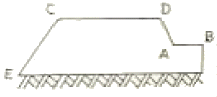
- 비탈기슭
- 비탈머리
- 똑마루
- 소단
(정답률: 알수없음)
23. 시료의 크기가 일정하지 않을 경우 단위시료당 나타나는 결점수에 따라 공정을 관리하는 것은?
- P관리도
- Pn관리도
- U관리도
- C관리도
(정답률: 알수없음)
24. 다음 절토 단면도에서 길이 30m에 대한 토량은?
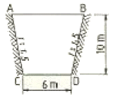
- 6030m3
- 5700m3
- 6600m3
- 6300m3
(정답률: 알수없음)
25. 원심력을 이용하여 콘크리트의 밀도 및 강도를 높인 원심력 철근콘크리트 중공(中空)말뚝의 장점이 아닌 것은?
- N값이 30 이상인 굳은 토층을 관통하기 쉽다.
- 말뚝재료를 구하기 쉽다.
- 말뚝길이 15m 이하에서는 경제적이다.
- 강도가 크므로 지지말뚝에 적합하다.
(정답률: 알수없음)
26. 지하철 등의 개착공사(Open cut work)에서 버팀보(strut)등이 많을 때 또는 우물통과 같은 협소한 장소의 깊은 굴착에 주로 이용되는 굴착기계는?
- 백호우(back hoe)
- 파워 쇼벨(power shvel)
- 클램셀(clamshell)
- 버켓 휠(bucket wheel)
(정답률: 알수없음)
27. 아스팔트 초장의 전압 끝손질에 이용되는 로울러는 다음 중 어느 것인가?
- macadam roller
- tandem roller
- tire roller
- 피견인식 roller
(정답률: 알수없음)
28. 발파시에 수직갱에 물이 고여 있을 때의 심빼기 발파공법으로 가장 적당한 것은?
- 스윙 컷(Swing Cut)
- V컷(V Cut)
- 피라미드 컷(Pyramid Cut)
- 번 컷(Burn Cut)
(정답률: 알수없음)
29. 교량가설 공법은 비계를 사용하는 공법과 비계를 사용하지 않는 공법, 비계를 병용하는 공법으로 분류할 수 있는데, 다음 중 비계를 사용하는 공법에 해당 하는 것은?
- 브라켓식 가설공법
- 캔틸레버식 가설공법
- 디뷔닥식 가설공법
- 이렉션 트러스식 가설공법
(정답률: 알수없음)
30. 옹벽의 안정상 수평 저항력을 증가시키기 위한 방법으로 가장 유리한 것은?
- 옹벽의 비탈경사를 크게 한다.
- 옹벽의 저판 및에 돌기물(key)을 만든다.
- 옹벽의 전면에 Apron을 설치한다.
- 배면의 본바닥에 앵커 타이(Anchor tie)나 앵커벽을 설치한다.
(정답률: 알수없음)
31. 뿜어붙이기 콘크리트(shotcrete) 시공시 리바운드(Rebound) 양을 감소시키는 방법이 아닌 것은?
- 분사 부착면을 매끄럽게 한다.
- 압력을 일정하게 한다.
- 벽면과 직각으로 분사한다.
- 시멘트량을 증가시킨다.
(정답률: 알수없음)
32. 폭우 시 옹벽배면에는 침투수압이 발생되는데 이 침투수에 의한 중요 영향으로 옳지 않은 것은?
- 활동면에서의 양압력 증가
- 포화에 의한 흙의 무게 증가
- 옹벽 저면에서의 양압력 증가
- 수평 저항력의 증대
(정답률: 알수없음)
33. 네트워크 공정표의 주공전선(critical path)에 관한 설명으로 옳지 않은 것은?
- 크리티컬 패스는 2개 이상이 될 수 있다.
- 크리티컬 패스상에서 총여유시간은 0이다.
- 공정단축은 이 경로에 착안하게 된다.
- 공정표의 개시점에서 종료점까지의 경로중에서 시간적으로 가장 짧은 경로이다.
(정답률: 알수없음)
34. open caisson의 설명에 대한 것 중 틀린 것은?
- 케이슨내의 흙은 주로 수중 굴착에 의해 이루어진다.
- 전석과 같은 장애물이 많은 곳에서의 작업은 곤란하다.
- 케이슨의 침하시 주변마찰력을 줄이기 위해 진동발파공법을 적용할 수 있다.
- 지하수를 저하시키지 않으며, 히빙, 보일링을 방지할 수 있으므로 인접 구조물의 침하 우려가 없다.
(정답률: 알수없음)
35. 공사일수를 3점 시간 추정법에 의해 산정할 경우 적절한 공사 일수는? (단, 낙관 일수는 6일, 정상일수는 8일, 비관일수는 10일이다.)
- 6일
- 7일
- 8일
- 9일
(정답률: 알수없음)
36. 5톤 용량의 불도저를 이용하여 절토한 흙을 20m 운반할 때 주어진 조건을 이용하여 시공능력(m3/hr)을 구하면?
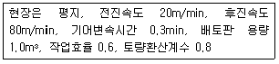
- 14.6m3/hr
- 16.6m3/hr
- 18.6m3/hr
- 20.6m3/hr
(정답률: 알수없음)
37. 암석을 발파할 때 암석이 외부의 공기 및 물과 접하는 표면을 자유면이라 한다. 이 자유면으로부터 폭약의 중심까지의 최단거리를 무엇이라 하는가?
- 보안거리
- 최소저항선
- 적정심도
- 누두반경
(정답률: 알수없음)
38. 보조기층, 입도 조정기층 등에 침투시켜 이들 층의 방수성을 높이고 그 위에 포설하는 아스팔트 혼합물과의 부착이 잘 되게 하기 위하여 보조기층 또는 기층위에 역층재를 살포하는 것을 무엇이라 하는가?
- 프라임 코트(prime coat)
- 택 코트(rack coat)
- 실 코트(seal coat)
- 패칭(patching)
(정답률: 알수없음)
39. 흐트러진 상태의 L=1.35, 단위중량 = 1.8t/m3인 토사를 8ton 덤프트럭으로 운반하고자 할 때, 이 덤프트럭 1대에 1회 적재 가능량(m3)은?
- 6.00
- 6.55
- 7.00
- 7.55
(정답률: 알수없음)
40. 먼저 굴착면 주위에 흙막이판을 박고 그 내부에 버팀보를 하면서 흙막이판 사이의 굴착을 진행시키는 것으로 주로 넓은 면의 굴착에 유리한 공법은 무엇인가?
- Open cut 공법
- Island 공법
- Trench cut 공법
- Well point 공법
(정답률: 알수없음)
3과목: 건설재료 및 시험
41. 다음은 목재의 장점을 열거한 사항이다. 이 중 틀린 것은?
- 무게가 가벼워서 취급이나 운반이 쉽다.
- 내구성은 석재나 콘크리트 보다는 떨어지나 방부처리를 하면 상당한 내구성을 갖는다.
- 가공이 용이하고 외관이 아름답다.
- 재질이나 강도가 균일하다.
(정답률: 알수없음)
42. 퇴적암 등에 나타나는 평행상의 절리(Jount)를 무엇이라 하는가?
- 편리(片利)
- 층리(層理)
- 석리(石理)
- 석목(石目)
(정답률: 알수없음)
43. 단위용적질량이 1.65t/m3 인 굵은 골재의 밀도가 2.65g/cm3일 때 이 골재의 공극률은 얼마인가?
- 28.6%
- 30.3%
- 33.3%
- 37.7%
(정답률: 알수없음)
44. 경량골재 및 중량골재에 관한 설명 중 틀린 것은?
- 천연 경량골재는 일반적으로 약하고 모양도 나쁘므로 고강도를 요구하는 콘크리트용으로는 부적당하다.
- 인공 경량골재는 공장에서 제조되기 때문에 일반적으로 깨끗하고 적당한 입도를 가지며, 품질의 변동이 적다.
- 인공 경량골재는 흡수량이 비교적 적기 때문에 콘크리트 배합에 건조한 상태로 사용해도 좋다.
- 중량 골재는 원자로, 방사선 등의 차폐효과를 높이기 위한 고밀도 콘크리트용으로 많이 사용된다.
(정답률: 알수없음)
45. 콘크리트용 굵은 골재의 내구성을 판단하기 위해서 황산나트륨에 의한 안정성 시험을 할 경우 조작을 5번 반복했을 때 굵은 골재의 손실질량 백분율의 한도는 일반적으로 얼마인가?
- 12%
- 10%
- 8%
- 5%
(정답률: 알수없음)
46. 다음 중 시멘트 콘크리트의 워커빌리티(workability) 측정방법이 아닌 것은?
- slump test
- floe test
- remolding test
- bleeding test
(정답률: 알수없음)
47. 알루미늄 분말이나 아연분말을 콘크리트에 혼입시켜 수소가스를 발생시켜 PC용 그라우트의 충전성을 좋게 하기 위하여 사용하는 혼화제는?
- 유동화제
- 방수제
- AE제
- 발포제
(정답률: 알수없음)
48. 시멘트의 풍화에 관한 설명으로 옳지 않은 것은?
- 풍화된 시멘트는 응결이 늦어지는 강도가 저하된다.
- 시멘트가 대기 중의 수분을 흡수하여 수화작용으로 풍화가 일어난다.
- 풍화는 고온, 다습하고 분말도가 높을수록 빨라진다.
- 풍화된 시멘트는 비중이 커지므로 충화의 정도를 아는데는 비중이 척도가 된다.
(정답률: 알수없음)
49. 다음의 시멘트 중에서 한중 콘크리트 공사용으로 사용하기에 가장 효과적인 것은? (단, 수화열에 의한 균열의 문제가 없는 경우)
- 고로 시멘트
- 조강포틀랜드 시멘트
- 실리카 시멘트
- 내황산염포틀랜드 시멘트
(정답률: 알수없음)
50. 아스팔트의 인화점과 연소점에 관한 다음 설명 중 옳지 않은 것은?
- 아스팔트를 가열했을 때 어느 일정온도에 달하면 화기를 가까이 했을 경우 인화하는데 이 때의 최저온도를 인화점이라 한다.
- 인화점은 연소점 보다 온도가 낮다.
- 아스팔트의 가열시에 위험도를 알기 위해 인화점과 연소점을 측정한다.
- 아스팔트가 인화되어 연소할 때의 최고 온도를 연소점이라 한다.
(정답률: 알수없음)
51. 다음 중 감수제에 대한 설명으로 알맞지 않은 것은?
- 시멘트 입지를 분산시킴으로서 단위수량을 줄인다.
- 공기연행작용이 없는 감수제와 공기연행작용을 함께하는 AE감수제 등으로 나누어진다.
- 건조에 의한 체적변화를 줄이기도 한다.
- 동일한 워커빌리티 및 강도를 얻기 위해서는 시멘트가 더 많이 들어가야 한다.
(정답률: 알수없음)
52. 콘크리트에 AE제를 혼입 했을 때의 설명 중 옳지 않은 것은?
- 유동성이 증가한다.
- 재료의 분리를 줄일 수 있다.
- 작업하기 쉽고 블리딩이 커진다.
- 단위 수량을 줄일 수 있다.
(정답률: 알수없음)
53. 스트레이트 아스팔트에 대한 설명으로 잘못된 것은?
- 블라운 아스팔트에 비해 감온성이 작다.
- 블라운 아스팔트에 비해 신장성이 우수하다.
- 블라운 아스팔트에 비해 단력성이 작다.
- 주요 용도는 도로, 활주로, 댐 등의 포장용 혼합물의 결합재이다.
(정답률: 알수없음)
54. 굵은골재의 노건조상태의 질량이 2000g 이었고, 표면건조 포화상태의 질량이 2090g, 수중에서의 질량이 1290g 이었다면 표면건조포화상태의 밀도는 몇 g/cm3인가? (단, 시험온도에서의 물의 밀도는 1g/cm3이다.)
- 2.57
- 2.61
- 2.71
- 2.77
(정답률: 알수없음)
55. 다음 중 금속재료에 대한 설명으로 잘못된 것은?
- 연성과 전성이 작다.
- 전기, 열의 전도율이 크다.
- 일반적으로 상온에서 결정형을 가진 고체로서 가공성이 좋다.
- 금속 고유의 광택이 있어 아름답다.
(정답률: 알수없음)
56. 아스팔트의 침입도 시험기를 사용하여 온도 25℃로 일정한 조건에서 100g의 표준침이 3mm 관입했다면, 이 재료의 침입도는 얼마인가?
- 3
- 6
- 30
- 60
(정답률: 알수없음)
57. 폭파력은 그다지 강력하지 않으나 값이 싸고, 취급 및 보관의 위험성이 적고, 발화가 간단하여 소규모 폭파에 사용되는 것은?
- 다이너마이트
- 흑색화약
- 칼릿
- 니트로 글리세린
(정답률: 알수없음)
58. 길이가 15cm인 어떤 금속을 17cm로 인장시켰을 때 폭이 6cm에서 5.8cm가 되었다. 이 금속의 포아송 비는?
- 0.15
- 0.20
- 0.25
- 0.30
(정답률: 알수없음)
59. 화약류 취급시 주의 사항으로 잘못된 것은?
- 뇌관과 폭약은 같은 장소에 두어 신속한 작업이 이루어지게 한다.
- 운반시에 화기나 충격을 받지 않도록 하여야 한다.
- 다이나마이트는 직사광선을 피하고 화기에 접근시키지 말아야 한다.
- 장기간 보관시에는 온도나 습도에 변질되지 않도록 하고 수분을 제거하여 동결하지 않도록 한다.
(정답률: 알수없음)
60. 건설공사품질시험기준에 따른 콘크리트 포장에서 평탄성 시험의 시험빈도는?
- 종방향 - 차로마다 전구간, 횡반향 - 100미터마다
- 종방향 - 100미터마다, 횡반향 - 차간마다 전구간
- 종방향 - 차로마다 전구간, 횡반향 - 200미터마다
- 종방향 - 200미터마다, 횡반향 - 차로마다 전구간
(정답률: 알수없음)
4과목: 토질 및 기초
61. 동일한 등분포 하중이 작용하는 그림과 같은 (A)와 (B) 두 개의 구형기초판에서 A와 B의 수직 Z되는 깊이에서 증가되는 지중응력을 각각 σA, σB라 할 때 다음 중 옳은 것은? (단, 지반 흙의 성질은 동일함)
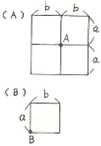
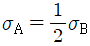
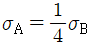
- σA=2σB
- σA=4σB
(정답률: 알수없음)
62. γsat=2.0t/m3인 사질토가 20°로 경사진 무한사면이 있다. 지하수위가 지표면과 일치하는 경우 이 사면의 안전율이 1 이상이 되기 위해서는 흙의 내부마찰각이 최소 몇 도 이상이어야 하는가?
- 18.21°
- 20.52°
- 36.06°
- 45.47°
(정답률: 알수없음)
63. 통일분류법에 의해 분류한 흙의 분류기호 중 도로 노반재료로서 가장 좋은 흙은?
- CL
- ML
- SP
- GW
(정답률: 알수없음)
64. 간극률 n=40%, 비중 Gs02.65인 어느 사질토층의 한계동수경사 icr은 얼마인가?
- 0.99
- 1.06
- 1.34
- 1.62
(정답률: 알수없음)
65. 흙의 동상에 영향을 미치는 요소가 아닌 것은?
- 모관 상승고
- 흙의 투수계수
- 흙의 전단강도
- 동결온도의 계속시간
(정답률: 알수없음)
66. Terzaghi의 압밀 이론에서 2차 입밀이란 어느 것인가?
- 과대하중에 의해 생기는 압밀
- 과잉간극수압이 “0”이 되기 전의 압밀
- 횡방향의 변형으로 인한 압밀
- 과잉간극수압이 “0”이 된 후에도 계속되는 압밀
(정답률: 알수없음)
67. 흙의 다짐에서 다짐에너지를 변화시킬 경우에 대한 성명으로 틀린 것은?
- 다짐에너지를 매우 크게 해도 다짐곡선은 영골기간극곡선 아래에 그려진다.
- 다짐에너지를 매우 크게 해도 다짐곡선은 영공기간극곡선 아래에 그려진다.
- 다짐에너지를 증가시키면 최적함수비는 감소한다.
- 최대건조 단위중량을 나타내는 점들을 연결하면 영공 기간극곡선이 얻어진다.
(정답률: 알수없음)
68. 흙시료 채취에 관한 설명 중 옳지 않은 것은?
- Post Hole형의 Auger는 비교적 연약한 흙을 Boring하는데 적합하다.
- 비교적 단단한 흙에는 Screw형의 Auger가 적합하다.
- Auger Boring은 흐트러지지 않는 시료를 채취하는데 적합하다.
- 깊은 토층에서 시료를 채취할 때는 보통 기계 Boring을 한다.
(정답률: 알수없음)
69. 항타 공식에 의한 마뚝의 허용지지력을 구하고자 한다. 이 때 말뚝햄머의 무게가 2.5ton, 햄머의 낙하고가 40cm, 타격당 말뚝의 평균 관입량이 1.5cm였고 안전율 Fs=6으로 보았다. Engineering News 공식에 의한 허용 지지력은? (단, 단동식 증기햄머를 사용하였다.)
- 3.6ton
- 4.2ton
- 9.5ton
- 16.7ton
(정답률: 알수없음)
70. 말뚝에 대한 동역학적 지지력공식 중 말뚝머리에서 측정되는 리바운드량을 공식에 이용하는 것ㄷ은?
- Hiley 공식
- Engineering News 공식
- Sander 공식
- Weisbach 공식
(정답률: 알수없음)
71. 다음 그림과 같은 정방형 기초에서 안전율을 3으로 할 때 Terzaghi 공식을 사용하여 지지력을 구하고자 한다. 이 때 한 변의 최소길이는? (단, 흙의 전단강도 c=6t/m2, ø=0°이고, 흙의 습윤 및 포화단위 중량은 각각 1.9t/m3, 2.0t/m3, Nc=5.7, Nq=1.0, Nγ=0이다.)
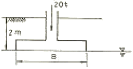
- 1.115m
- 1.432m
- 1.512m
- 1.624m
(정답률: 알수없음)
72. 아래 그림에 보인 댐에서 A점에 대한 간극수압은?
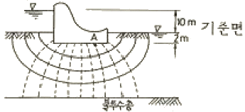
- 3t/m2
- 4t/m2
- 5t/m2
- 6t/m2
(정답률: 알수없음)
73. 포화된 실트질 모래지반에 표준관입 시험결과, 표준관입 저항치 N= 21이었다. 수정 표준관입 저항치는?
- 20
- 19
- 18
- 17
(정답률: 알수없음)
74. 다음 흙의 강도에 대한 설명으로 틀린 것은?
- 점성토에서의 내부마찰각이 작고 사질토에서는 점착력이 작다.
- 일축압축 시험은 주로 점성토에 많이 사용된다.
- 이론상 모래의 내부마찰각은 0이다.
- 흙의 전단응력은 내부마찰각과 점착력의 두 성분으로 이루어진다.
(정답률: 알수없음)
75. 그림과 같이 지표면에 P1=100ton의 집중하중이 작용할 때 지중 A점의 집중하중에 의한 수직응력은 얼마인가? (단, 영향값 Iσ=0.2214)
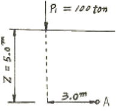
- σz=0.10ton/m2
- σz=0.20ton/m2
- σz=0.89on/m2
- σz=2.00ton/m2
(정답률: 알수없음)
76. 다음 설명 중 틀린 것은?
- 점토의 경우 입도 분포는 상대적으로 공학적 거동에 큰 영향을 미치지 않고 물의 유무가 거동에 매우 큰 영향을 준다.
- 액성지수는 자연상태에 있는 점토 지반의 상대적인 연결을 나타내는데 사용되며 1에 가까운 지반일수록 과압밀이 상태에 있다.
- 활성도가 크다는 것은 점토광물이 조금만 증가하더라고 소성이 매우 크게 증가한다는 것을 의미하므로 지반의 팽창 잠재 능력이 크다.
- 흐트러지지 않은 자연상태의 지반인 경우 수축한계가 종종 소성한계보다 큰 지반이 존재하며 이는 특히 민감한 흙의 경우 나타나는 현상으로 주로 흙의 구조 때문이다.
(정답률: 알수없음)
77. γt=1.9t/m3, ø=30°인 뒤채움 모래를 이용하여 8m 높이의 보강토 옹별을 설치하고자 한다. 폭 75mm, 3.69mm의 보강띠를 연직방향으로 설치간격 Sγ=0.5m, 수평방향 설치간격 Sn=1.0m로 시공하고자 할 때, 보강띠에 작용하는 최대힘 Tmax의 크기를 계산하면?
- 1.53ton
- 2.53ton
- 3.53ton
- 4.53ton
(정답률: 알수없음)
78. 다음은 샌드콘을 이용하여 현장 흙의 밀도를 측정하기 위한 시험결과이다. 다음 결과로부터 현장 흙의 건조단위 중량은?
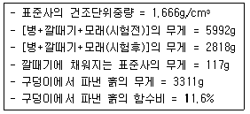
- 1.617t/m3
- 1.7161.617t/m3
- 1.8171.617t/m3
- 1.9171.617t/m3
(정답률: 알수없음)
79. 어떤 흙의 전단실험결과 c=1.8kg/cm2, ø=35°, 토립자에 작용하는 수직응력 σ=3.6kg/cm2일 때 전단강도는?
- 4.89kg/cm2
- 4.32kg/cm2
- 6.33kg/cm2
- 3.86kg/cm2
(정답률: 알수없음)
80. Rod에 붙인 어떤 저항체를 지중에 넣어 관입, 인발 및 회전에 의해 흙의 전단강도를 측정하는 원위치 시험은?
- 보링(boring)
- 사운딩(sounding)
- 시료체취(sampling)
- 비파괴 시험(NDT)
(정답률: 알수없음)